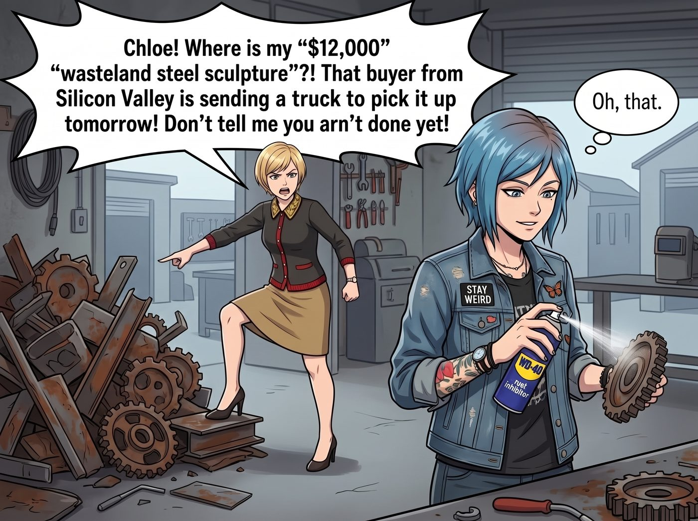
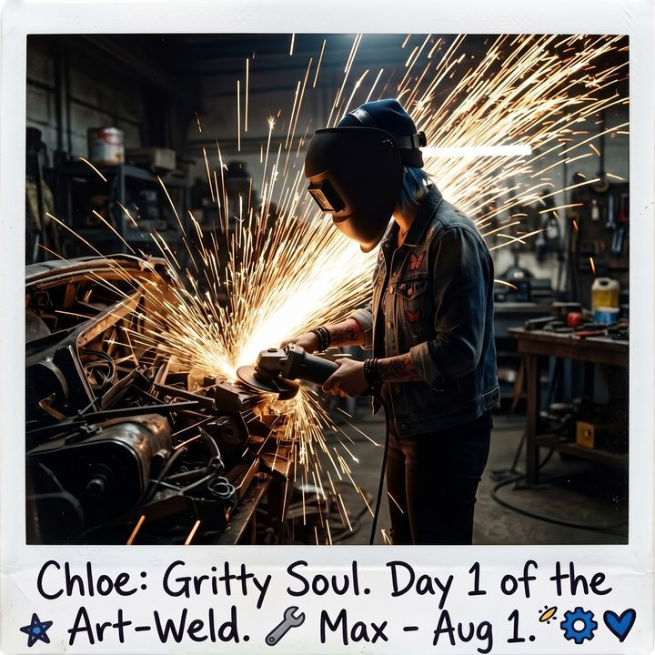

重工業三大傳統


在美國重工業界，一直流傳著三大光榮傳統：「永遠超時（Behind Schedule）、永遠超支（Over Budget）、以及為了莫名其妙的細節過度設計（Over-engineered）。」
Chloe Elizabeth Price 作為一個野路子出身的機械天才，可以保證她焊出來的液壓桿比原廠還要堅固三倍（Spec 絕對不爛），但她那顆坐不住的大腦，注定了她無法逃脫前兩項工業詛咒。
當你把一個喜歡重金屬和爆炸的龐克太妹，和兩個精打細算的「資本家/官僚」關在一起時，工坊裡必然會爆發激烈的衝突。但如果你以為在街頭混大的 Chloe 會被 Lily 的 Excel 表格和 Victoria 的催命奪魂Call 按在地上摩擦，那你就太小看「阿卡迪亞灣第一忽悠大師」的嘴砲功力了。
【場景一：對決黑魔法師的「戰略性超支」】
「Chloe 學姐，」Lily 拿著平板電腦，幽靈般地出現在火花四濺的工坊裡，語氣冰冷，「西雅圖市政廳的除雪車液壓桿翻新項目，您已經超時 48 小時。更嚴重的是，物料報表顯示，您私自購買了價值 800 美元的『航空級鈦合金螺栓』，導致該項目成本超支了 150%。我們現在是虧本狀態。」
換作一般人，面對 Lily 這種帶有強烈壓迫感的合規審查，早就心虛地道歉了。
但 Chloe 只是慢條斯理地推起電焊面罩，拿起一塊抹布擦了擦手，嘴角勾起一抹極度囂張的街頭老油條微笑。
「實習生，這就是為什麼妳只能坐在辦公室裡算報表，而我才是那個在第一線保護營地資產的人。」
Chloe 拿起一顆閃閃發亮的鈦合金螺栓，在 Lily 面前晃了晃，開始了她的降維忽悠：
「妳以為西雅圖市政廳那些開除雪車的司機是什麼好東西？他們都是一群喝多了便宜啤酒、把除雪車當碰碰車開的瘋子！如果我用標準的碳鋼螺栓，三個月後它就會在一次撞擊中斷裂。到時候，市政廳的法務部就會以『施工質量不合格』為由，起訴我們的微型重工業實驗室，索賠五十萬美元。妳的防禦矩陣擋得住這種物理級別的訴訟嗎？」
Lily 愣了一下，大腦開始飛速計算潛在的法律風險。
「所以，我這不叫超支。」Chloe 雙手按在工作檯上，眼神無比堅定且充滿大局觀，「我這叫『針對極端操作環境的預防性冗餘升級』。妳現在要做的，不是在這裡扣我的預算，而是立刻去修改合約！
給市政廳發一份變更提案：為了應對西雅圖今年極端惡劣的氣候，我們建議升級成工業級防護規格，把這批鈦合金螺栓列成一個 2500 美元的強化選配包。他們點頭，就照新價格結算；他們不要——」
Chloe 拍了拍胸口：「這 800 塊，老娘自己吞。懂嗎？」
Lily 的眼睛微微睜大了。
短暫的沉默後，黑魔法師推了推圓框眼鏡，眼底閃過一絲對這種「反向剝削」的欣賞。
「以正式變更單的形式，說明升級理由並由甲方決定是否採用……這在合規框架內完全可行，而且非常標準。您的街頭風險控制邏輯非常有啟發性，學姐。我現在就去起草變更提案。」
她走到門口，又回過頭補了一句：「不過，延誤的四十八小時，請您自己打電話跟市政廳道歉。」
「……知道了。」
看著 Lily 滿意地轉身離開，躲在沙發上喝啤酒的 Max 忍不住對著 Chloe 豎起了一個大拇指。Chloe 則得意地拋了個媚眼。
【場景二：對決老錢名媛的「藝術化延期」】
打發了 Lily，Chloe 還沒來得及喘口氣，Victoria 就踩著高跟鞋殺進了工坊。
「Chloe！我那件標價一萬兩千美金的『廢土鋼鐵雕塑』呢？！矽谷那個買家明天就要派貨車來拉貨了！妳不要告訴我妳還沒做完！」Victoria 氣急敗壞地指著角落裡一堆根本還沒成型的廢鐵。
「噢，那個啊。」Chloe 毫不慌張地拿起一罐 WD-40 防鏽油，噴在旁邊的齒輪上，「我把它扔在車廂外面的泥地裡了，昨晚還淋了一整夜的雨。」
「妳瘋了嗎？！」Victoria 差點尖叫出聲，「妳把它扔在泥裡？！那可是我的一萬兩千美金！！」
「大小姐，妳的藝術嗅覺怎麼退化得這麼厲害？」
Chloe 放下防鏽油，用一種極度痛心疾首的「藝術家」眼神看著 Victoria，開始了她的第二輪概念畫餅：
「妳以為那個矽谷暴發戶花一萬兩千塊，是買我昨天剛焊好的、亮晶晶的破鐵疙瘩嗎？錯了！那叫『工業量產垃圾』！
他們買的是『時間』，是『歲月的痕跡』！我把它扔在泥地裡淋雨，是為了讓它進行『自然氧化與微生態附著（Natural Oxidation）』。我要讓太平洋西北區的雨水，在它的表面刻下真實的鐵鏽斑紋！這叫『融入了阿卡迪亞灣悲劇靈魂的在地藝術（Site-specific Art）』！」
Victoria 被這套一套的當代藝術黑話唬得一愣一愣的。
Chloe 趁熱打鐵，逼近了一步：「妳現在去跟那個買家說，這件作品目前正處於最關鍵的『自然淬鍊期』，強行移動會破壞它與大地母親的連接。交貨期必須推遲一個星期。而且，因為採用了極端天氣的自然處理法，作品的深度增加了，價格必須上調 20%。」
Victoria 的眼神從憤怒，逐漸變成了沉思，最後化為了一種資本家發現新大陸般的狂熱。
「『太平洋西北區的自然氧化』……老天，這概念簡直絕了。」Victoria 喃喃自語，「那些矽谷的土包子最吃這種玄乎其玄的環保藝術概念。Chloe，妳雖然是個文盲，但在拿捏暴發戶心理這方面，妳簡直是個天才。我現在就去給他發郵件！」
看著 Victoria 興沖沖地踩著高跟鞋跑去敲竹槓，Chloe 終於長長地舒了一口氣，癱倒在工作椅上。
Max 舉著寶麗來相機從角落裡走出來，鏡頭對準了剛完成「雙殺」的 Chloe。
「承認吧，妳只是昨天沉迷打電動，忘記給市政廳焊液壓桿，也完全沒動手做 Victoria 的雕塑，對吧？」Max 笑著揭穿了真相。
「街頭法則第四條，超級麥克斯。」
Chloe 拿起一罐啤酒，帥氣地拉開拉環，對著鏡頭露出一個混不吝的龐克笑容：
「只要妳的牛皮吹得夠大、概念包裝得夠狠，『超支』就叫戰略性投資，『延期』就叫工匠精神。沒有人能把老娘按在地上摩擦，就算她是黑魔法師和老錢名媛也不行。」
說完，她仰頭把那罐啤酒一口氣喝乾，捏扁了罐子，長長地嘆了口氣。
「所以……」Chloe 站起身，重新拉下電焊面罩，「接下來這七天，老娘得真的把那坨廢鐵焊成藝術品，再把它扔進雨裡好好養鏽。不然 Victoria 那封郵件就變成詐騙信了。」
角磨機的轟鳴聲再次響起，火花濺滿了半個工坊。
Max 笑著按下快門，拍下了那道被火花照亮的背影。